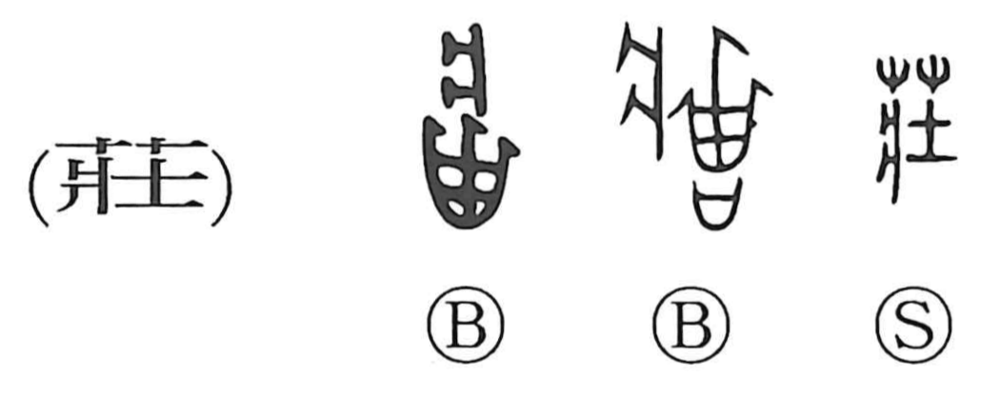

荘

Kun: | On: so, sho
solemn ・ villa ・ manor
Explanation
Originally written 莊, this is a phono-semantic character with 壯 as its phonetic element, signaling the on reading so and carrying senses such as “prosperous,” “large,” and “strong.” From that nuance of robust fullness it comes to express a dignified, stately bearing—hence the meaning “solemn” in compounds—and it is also used for a country residence, giving the senses “villa” and “manor.”